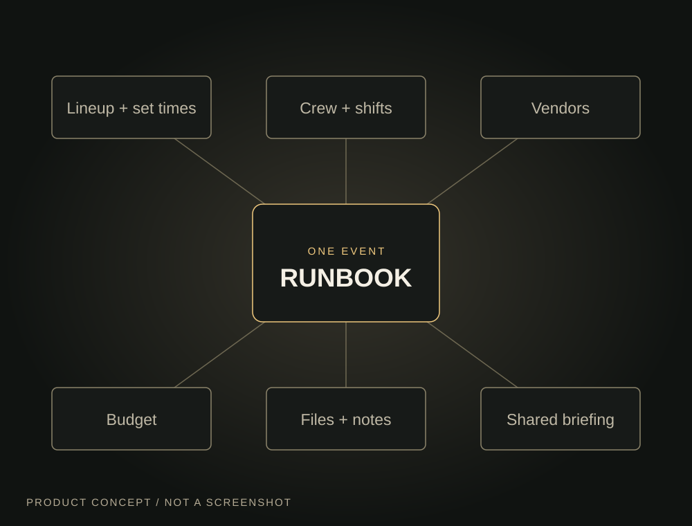

01 / Archive · Discontinued
Runbook.
A control station for the people who make events happen.
An event venue has a thousand moving parts. Runbook explored what happens when the schedule, crew, suppliers, budget, files and briefing all live in one event workspace instead of being scattered across messages and spreadsheets.
Explore the brief ↓
The brief
One place for the whole night.
The idea was a practical home for recurring venues, festivals and independent organisers: venue details that carry across events, people and suppliers you can find again, and a clear record of what happened last time.
Inside each event, the proposed MVP brought together set times, artist requirements, staff shifts, vendor responsibilities, tasks, expected versus actual spending, and the files a team needs on the day. A mobile-friendly briefing link would give incoming collaborators the right information without making them join the internal workspace.
How far it went
A functional MVP, not a launch.
I used Lovable to build an initial working MVP and then explored a more intuitive, atmospheric interface for it. The working-state description comes from my project notes at the time; I am not presenting that as an independently audited feature checklist or a production release.
The concept has since been discontinued. This page preserves the product thinking and the work that reached prototype stage, without implying active development, customers, or a measured percentage of completion.
What stayed with me
Operational software can feel calm and culturally at home with the people using it. Runbook was an early attempt to make dense, consequential work easier to see and navigate.
← All AI Labs projects